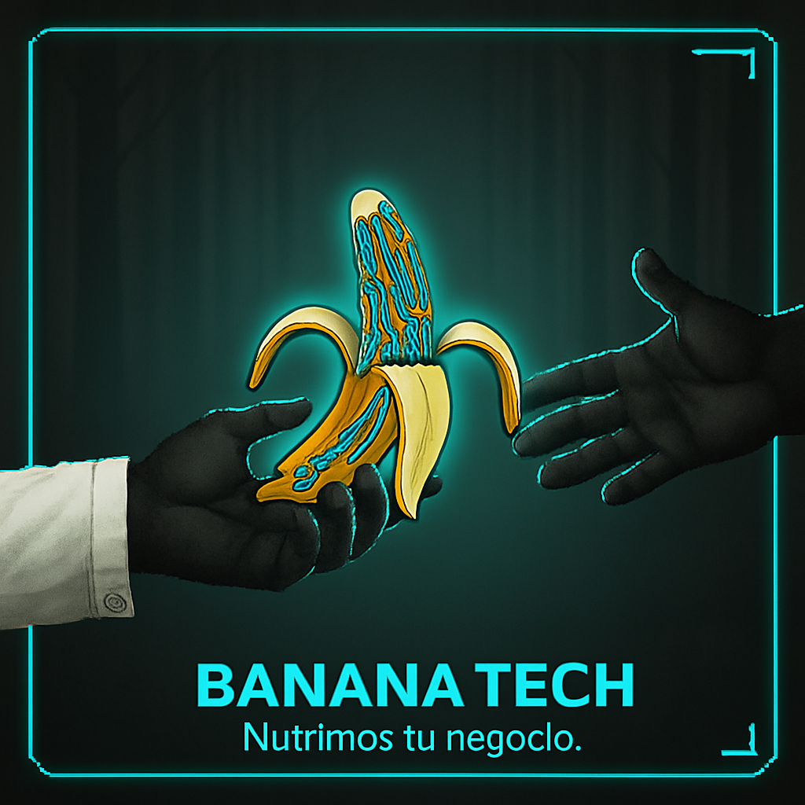

BANANA TECH

Nutrimos tu negocio.
Nutrimos tu negocio.
Diseñamos las herramientas que tu empresa necesita para triunfar en el mundo digital.
Desde sitios web que venden, hasta análisis de datos que revelan oportunidades y software que
automatiza tu éxito.
En Banana Tech creamos soluciones prácticas. Nuestros servicios están diseñados para resolver problemas reales, hacer tu vida más fácil y entregar resultados visibles en tu negocio. Aquí tienes las herramientas para crecer.
Tu web es tu mejor vendedor, disponible 24/7. Creamos sitios modernos, rápidos y fáciles de usar, diseñados para que tus visitantes te contacten, agenden o compren.

Evita perder clientes por demoras. Con un asistente virtual en WhatsApp, tus clientes reciben atención al instante, en cualquier momento del día.
Haz que tu negocio sea la primera opción en tu zona. Optimizamos tu presencia en Google y Google Maps para atraer a los clientes que están más cerca.
Deja de tomar decisiones a ciegas. Analizamos los datos que tu negocio ya genera (web, Google, conversaciones del bot) para mostrarte qué funciona, qué no y dónde están tus oportunidades de crecimiento.
Cada negocio es único. Déjanos escucharte y preparar un paquete a la medida de tus metas y presupuesto.
